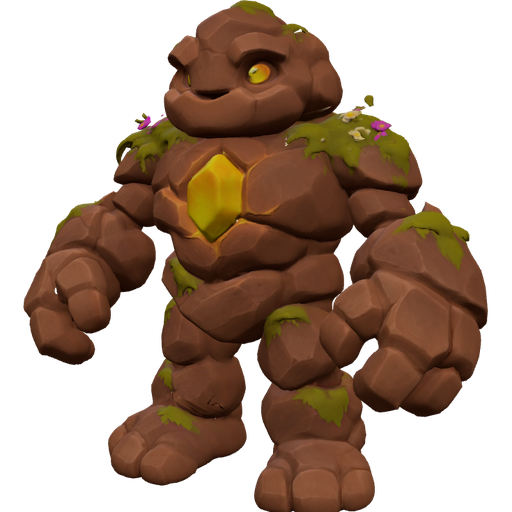
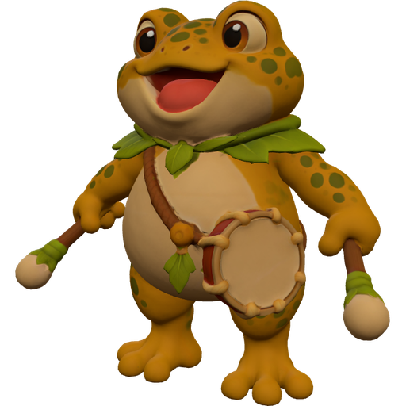
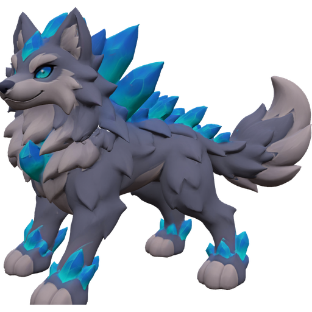
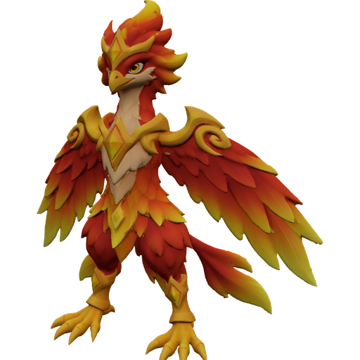
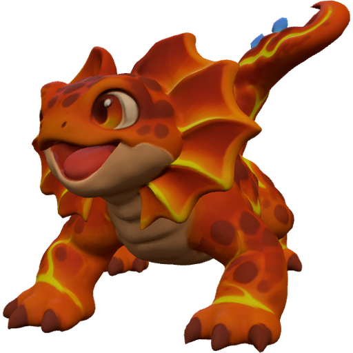
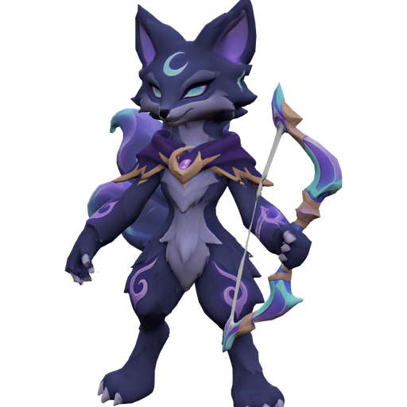
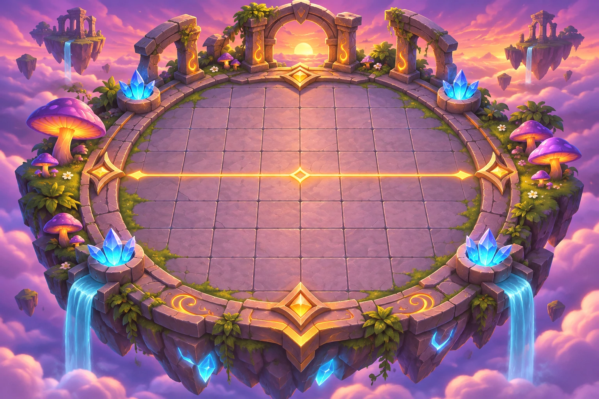

Oyuncu
Gümüş Lig · Sezon 1
1240
Ustalık 12
Efsaneler kaynaşır · Kut senin elinde
DEVAM ET
Tur 5 ·
4 · 3/7 zafer
Yeni Maç
~7 dk
Düello Kodu
Kahramanlar
Nasıl Oynanır
Öneri C · Tombul Oyuncak
ZAFER
3/7
TUR
5
ALAMET
Kan Ayı
— herkes +%20 hasar verir
K
10
SIRADAKİ RAKİP

GeceKartalı
1180
4
3/7
Ayaz ×2 saldırını yavaşlatır. Arkayı Dev ile koru.
SOYLARIN
TAKIM
5/5
Düşman bu yönde
ÖN SIRA
ARKA
YEDEK
· 3/4 · Kahramanı sürükle ya da dokun-dokun
Yenile
K
1
Kilitle
Savaşa!
GeceKartalı'na karşı

GeceKartalı
1180 · Tur 5
0:18
Kan Ayı · +%20 hasar
1×
2×
3×
Sen
Rakip
ŞAMPİYON!
7 zafer · 10 turda · 2 can kaldı
TUR
GEÇMİŞİ
KUPA
1200
1240
+40
SON
TAKIMIN
+7 ustalık
DÜELLO
KODU
KUT1-G2K·AYx·ANK-KOC1-SEM1-KRB1·Oyuncu·7Q4F
Kopyala
Paylaş
Ana ekran
Yeniden